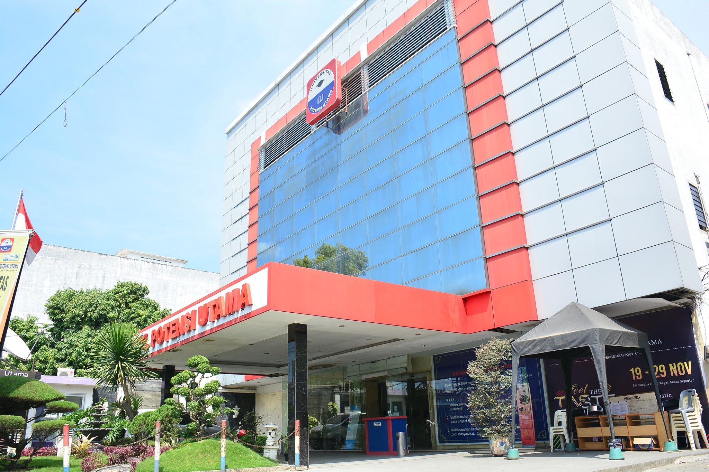
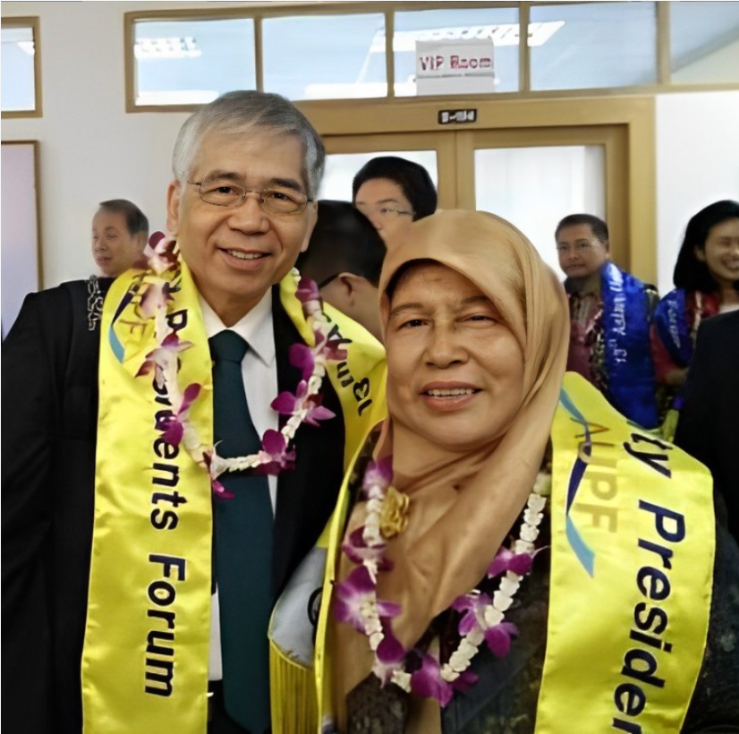
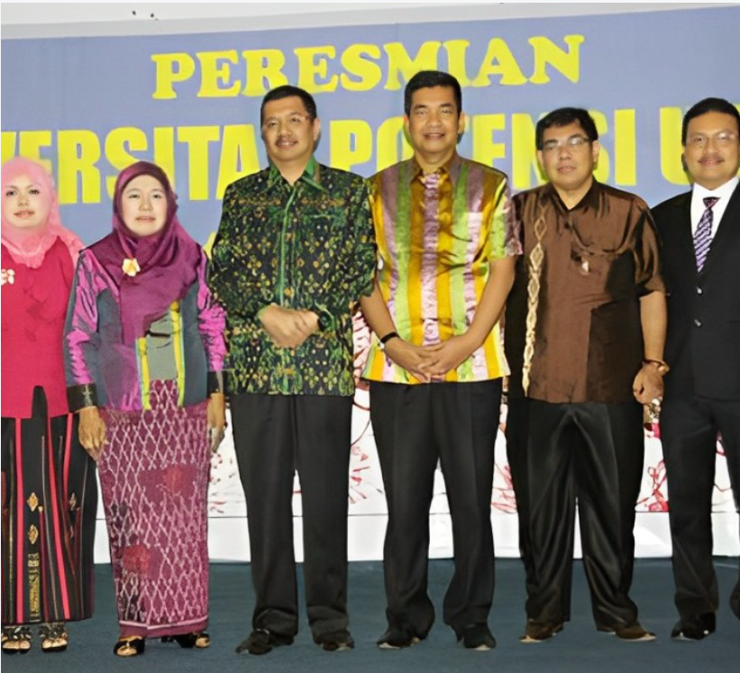

Universitas Potensi Utama
Sejarah Kami
Universitas Potensi Utama merupakan salah satu Perguruan Tinggi Swasta (PTS) terkemuka di Kota Medan yang bernaung di bawah Yayasan Potensi Utama Medan. Institusi pendidikan ini secara konsisten bergerak aktif di bidang pengembangan pendidikan yang berbasis teknologi informasi dan komunikasi.
Akar sejarah universitas ini bermula pada tahun 1994. Pada awal pendiriannya, institusi ini berbentuk sebuah tempat kursus komputer dan pengajaran Bahasa Inggris dengan nama PLSM (Pendidikan Luar Sekolah Masyarakat) Potensi Utama.

Kenali Kampus Kami Lebih Dekat
Saksikan video profil singkat mengenai lingkungan kampus, aktivitas mahasiswa, sarana pembelajaran, serta komitmen kami dalam melahirkan generasi unggul yang siap bersaing secara global.
Perkembangan Universitas Potensi Utama
Pada tahun 2014, STMIK Potensi Utama berubah bentuk menjadi Universitas Potensi Utama berdasarkan izin Kementerian Pendidikan dan Kebudayaan dengan SK nomor: 424/E/O/2014 dengan motto “Kami hadir untuk mencerdaskan kehidupan bangsa”. Saat ini, Universitas Potensi Utama memiliki 6 Fakultas yang terdiri dari 14 Program Studi, yaitu:
Fakultas Teknik & Ilmu Komputer
Program Studi: Teknik Industri (S-1), Teknik Informatika (S-1), Sistem Informasi (S-1), Rekayasa Perangkat Lunak (S-1), Rekayasa Sistem Komputer, Sistem Informasi (D-3), dan Ilmu Komputer (S-2)
Fakultas Seni & Desain
Program Studi: Desain Komunikasi Visual (S-1), Televisi dan Film (S-1), dan Desain Interior (S-1)
Fakultas Psikologi
Program Studi: Psikologi (S-1)


Fakultas Hukum
Program Studi: Hukum (S-1)
Fakultas Ilmu Politik & Kependidikan
Program Studi: Ilmu Hubungan Internasional (S-1) dan Pendidikan Bahasa Inggris (S-1)
Fakultas Ekonomi & Bisnis
Program Studi: Ekonomi Syariah (S-1), Perbankan Syariah (S-1), Manajemen (S-1), dan Akuntansi (S-1)
Masing-masing Program Studi sudah diakreditasi oleh Badan Akreditasi Nasional Perguruan Tinggi (BAN-PT). Penyelenggaraan pendidikan sudah melaksanakan Tridharma Perguruan Tinggi yaitu melaksanakan Pendidikan, melaksanakan Penelitian dan Pengabdian kepada Masyarakat, dan penyelenggaraan manajemen disesuaikan dengan peraturan yang berlaku serta diselaraskan dengan Visi, Misi dan Tujuan Universitas Potensi Utama.

Hj. Nuriandy, BA
Founder